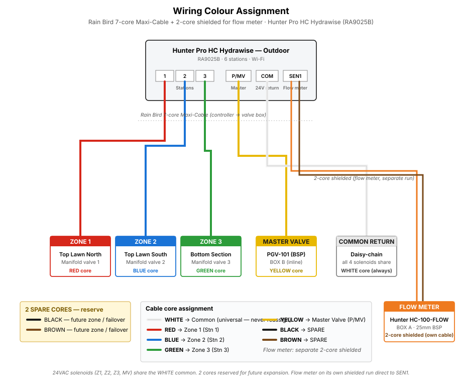

Key assembly notes:
• Use
PTFE tape on all BSP threaded connections (2–3 wraps, clockwise).
• Use
stainless jubilee clips doubled up on both ends of the flex hose barbs.
• The
bulkhead fitting (pump discharge) requires a clean drilled hole through the tank wall at pump-outlet height – use a hole saw sized to the fitting's body diameter, then seal with both rubber washers (one each side).
• The
tank winter drain uses the factory-moulded 1" BSP outlet (low on the side wall, pre-drilled at point of order) – factory-sealed thread, no DIY drilling required. Fit the Enduramaxx union ball valve directly onto the male thread with PTFE tape.
• The
float fill valve mounts through the tank lid or side wall – keep the outlet above the max water level to maintain the air gap for backflow protection.
• The
pump float switch must be set so the pump cuts off before the tank runs dry – typically 50–100mm above the pump base.
•
Pre-assemble pump → hose → barb → bulkhead on a workbench before dropping into the tank. PTFE-wrap the barb's BSP M into the bulkhead's BSP F port (hand-tight + 1 turn), double-jubilee-clip the hose at both ends, loose-fit the bulkhead's outer nut. Lower pump first, position close to east wall (within ~30 cm), reach in and push the bulkhead's M-thread through the pre-drilled 35 mm hole, then tighten the outer nut from outside.
Pre-drilling tip: 35 mm hole saw, low RPM with light pressure, support inside wall with wood offcut, deburr both sides with the Nerrad chamfer tool. Avoids fighting jubilee clips inside the tank.
•
Vertical pipe support outside the tank (rebar method): with the bulkhead at 1150 mm height, the 25 mm MDPE drops ~1.55 m vertically down the side of the tank to reach trench depth (400 mm below grade). Support this exposed run with a
2 m × 8 mm steel twisted rod cut in half (Screwfix 542CP, £7.99) — gives two ~1 m supports. Hammer each rod into the ground ~600 mm deep, leaving 300–400 mm above grade, positioned ~50 mm behind the pipe. Attach pipe with 2× heavy-duty UV-resistant cable ties (200 mm × 9 mm) per rod — one at ~100–150 mm above ground, second slightly higher.
Alignment trick: hold the pipe perfectly vertical, then tighten the cable ties — gives a clean professional finish and prevents the riser sagging under thermal cycling. Insulate the exposed run for winter (foam pipe sleeve).
•
Trench spec (Option B — shared trench): 300 mm wide × 400 mm deep, 300 mm bucket on mini digger. Carries all 4 buried pipes side-by-side with ~40 mm spacing: 25 mm mainline (blue), 25 mm zone lateral (orange), 25 mm zone lateral (purple), 20 mm fill line. Total cross-section ~95 mm fits with margin. 400 mm depth chosen for frost protection.
Funny pipe risers (Hunter FlexSG) at each sprinkler — flexible loop tolerates ±100 mm trench depth variation, no rigid swing-joint reach constraint.
Fill-line frost risk mitigated by the tap-end blow-out tee (see procedure step 3). Profile: 50 mm sharp-sand bed → pipes → 100 mm sand surround → backfill to 250 mm → blue "Water" warning tape → screened soil backfill in 150 mm lifts.
•
Funny pipe risers (Hunter FlexSG, replaces SJ-512): at each sprinkler, fit ½" BSP M spiral barb elbow into the lateral tee, push 30-50 cm of FlexSG onto the barb, leave the upper end pointing out of ground with a temporary cap during backfill. After turf/lawn levelling, push a second elbow onto the upper end, screw PRS-40 body onto the elbow, lower sprinkler to grade — funny pipe loops to absorb position offset (up to ~80 cm reach if needed). Forgiving on trench depth, position, and grade — installer-friendly for first-time DIY. No service pocket required; the buried loop self-accommodates.
•
Awkward heads (>200 mm off trench line): either dogleg the trench closer, use SJ-712 (longer reach), or accept a buried compression elbow + stub for that single head (trade-off: loses flexibility).
•
Trench routing priorities: ① through flower beds wherever possible — easier digging, no lawn damage, ② along path edges under the first 200 mm of adjacent soil, ③ avoid lawn crossings (each one = a soft strip that settles differently), ④ detour around tree roots rather than under.
•
Trench dimensions by section type:
| Section |
Width |
Depth |
Bucket |
Notes |
| Shared trench (main + 2 laterals + fill line) |
300 mm |
400 mm |
300 mm |
All 4 pipes side-by-side, ~40 mm spacing. 400 mm = frost depth. Funny-pipe risers absorb depth variation. |
| Solo lateral with sprinklers (orange or purple run alone) |
150 mm preferred (300 mm fine) |
300 mm |
150 mm trenching bucket |
Swing-joint ceiling still governs. Narrower trench = less lawn scar. |
| Pure transit lateral (no heads tapping off) |
150 mm |
250 mm |
150 mm |
No riser → can go shallower. Protection from spade/aerator only. |
| Under path / driveway |
300 mm |
400 mm + protective sleeve |
300 mm |
Mechanical load zone. Use split-duct conduit sleeve over pipe through the crossing. |
•
Solo-lateral backfill (simpler than shared): 30 mm sharp-sand bed → pipe → 50 mm sand surround → screened soil to 200 mm → warning tape (optional — laterals are drained in winter) → screened soil backfill in 150 mm lifts.
•
Rule of thumb: default all lateral runs to 300 mm depth. Only drop to 250 mm for sections confirmed as pure transit (no sprinkler tees). Not worth the mental overhead for a 50 mm gain on short runs.
• Install the
pipe sleeve through the retaining wall before the wall is finished.
•
Flow meter orientation: arrow on body must point toward manifold; mount horizontal with dial face up; allow 10×Ø (~25cm) straight pipe upstream and 5×Ø (~13cm) downstream.
•
Flow meter wiring: 2-core
shielded signal cable from meter's pulse output → SEN1 terminals on Hunter Pro-HC controller. Run as its own cable, separate from the 7-core valve cable — shielding is important to keep 24 VAC solenoid switching noise off the low-voltage pulse signal.
•
Master valve: a separate Hunter PGV-101 (supplied by Mike in addition to the 3-zone manifold) is plumbed INLINE between the flow meter and the manifold, in Box A. Its solenoid wires to the Pro-HC's
P/MV terminal (common + MV). It opens automatically whenever any zone runs — no separate programming needed.
•
Winterisation with master valve: manual zone runs from the controller will open the master valve automatically, so air can reach the zones. No manual override needed. Keep the ½" blow-out ball valve CLOSED during normal operation (the Euro male plug acts as a self-sealing cap when nothing is clipped on).
•
Electrics — cable & core map: one continuous 50 m run of
7-core UF direct-burial irrigation cable, 0.5 mm² (AWG 20), laid in the same trench as the pipe (Option B shared trench). Cable sits on the sand surround, ~50 mm above the pipes, left of mainline. Leave
200 mm service loop at each box. All splices use
3M DBR/Y-6 gel-filled direct-burial connectors (waterproof, no resealing required) — splice inside the valve box above waterline, never bare in trench. Label every core at both ends with heat-shrink markers.
| Core |
Colour (typical) |
Function |
Pro-HC terminal |
Terminates at |
| 1 | White | COM — shared 24 VAC common | C (Common) | Splices to all 3 solenoid commons + master valve common (pigtail in Box C) |
| 2 | Red | Z1 — zone 1 (Top Lawn North) | 1 | BOX C — Z1 PGV-101 (BSP) solenoid black lead |
| 3 | Blue | Z2 — zone 2 (Top Lawn South) | 2 | BOX C — Z2 PGV-101 (BSP) solenoid black lead |
| 4 | Green | Z3 — zone 3 (Bottom Section) | 3 | BOX C — Z3 PGV-101 (BSP) solenoid black lead |
| 5 | Yellow | MV — master valve hot | P/MV | BOX B — master PGV-101 (BSP) solenoid black lead |
| 6 | Black | SPARE — reserved for future zone / failover | — | Capped & labelled at both ends |
| 7 | Brown | SPARE — reserved for future zone / failover | — | Capped & labelled at both ends |
| FM | Orange / Brown
(separate cable) | FM+ / FM− — flow-meter pulse pair | SEN1 (+/−) | BOX A — HC-100-FLOW red / black leads. 2-core shielded, separate run from the 7-core (shielding to keep solenoid noise off the pulse signal). |

Wiring colour assignment — Rain Bird 7-core Maxi-Cable + separate 2-core shielded for flow meter.
•
Splice count per box (all 3M DBR/Y-6): BOX A = 2 (FM+ and FM− to meter leads). BOX B = 2 (MV + COM tap to master valve). BOX C = 4 (Z1, Z2, Z3 and COM pigtail serving all 3 zone solenoids). Total = 8 splices used, order a 10-pack for 2 spare.
•
COM pigtail (BOX C): strip 50 mm of white core, twist in with the three solenoid white leads (one "home" + three "valve") into a single DBR/Y-6 — this is the one 4-way splice in the system.
•
Controller wiring at the house: Hunter Pro-HC inside garage/outbuilding. Terminals used (from the 7-core):
C (white, common),
P/MV (yellow, master),
1 (red, Z1 Top Lawn North),
2 (blue, Z2 Top Lawn South),
3 (green, Z3 Bottom Section). Black + brown cores of the 7-core are capped as spares.
SEN1 (+/−) accepts the HYFM25's 2-core shielded cable, which runs separately from the 7-core. Strain-relief both cables at the wall entry. Leave outputs 4–6 unused.
•
Polarity: Hunter 24 VAC solenoids are
non-polarised — either lead to COM, either to hot. Same for master valve. Flow meter IS polarised (red = pulse, black = ground): follow HC-100-FLOW instruction card.
•
Optional earth rod: 1.2 m copper-bonded rod within 1 m of controller, bonded to controller GND terminal. Cheap lightning/surge insurance for exposed garden runs.
•
Cable route sanity check: total run house → BOX A → BOX B → BOX C ≈ 35–40 m. 50 m roll gives margin for service loops + wall penetration slack. Do NOT try to splice mid-run in the trench — if 50 m is short, buy a 2nd roll and splice inside a box.